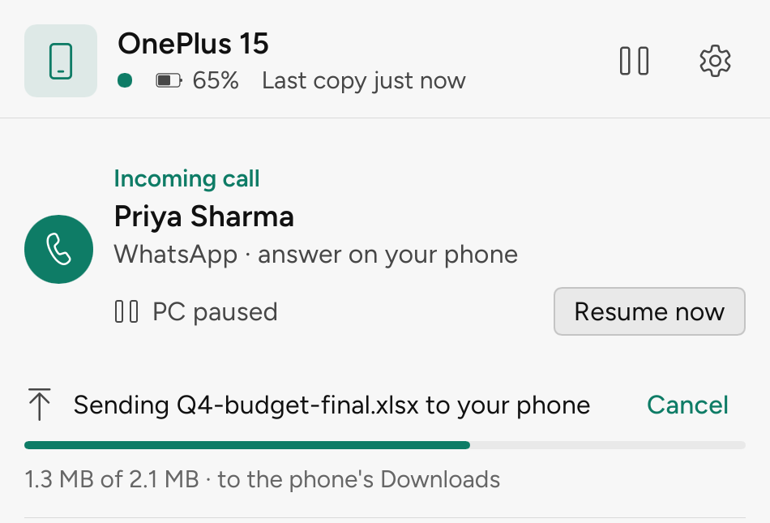
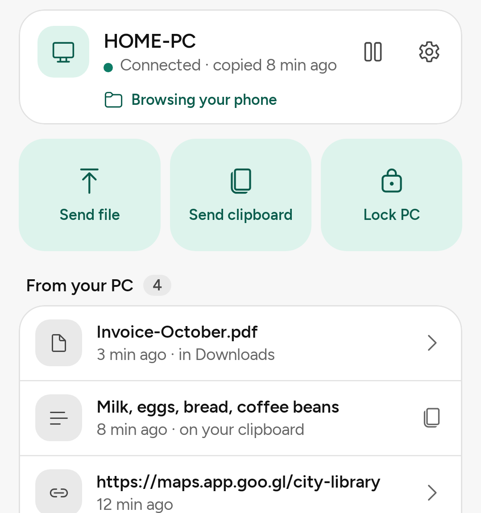

Your phone and PC, finally on speaking terms
Pocket Door links your Android phone to your Windows PC. Reply to notifications, copy and paste between them, and browse your phone's photos and files, all over your own Wi-Fi.
No account needed. You need both apps.




What it does
-
Notifications
Read and reply from your PC, without picking up your phone.
-
Copy and paste
Copy on one device, paste on the other.
-
Photos and files
Browse your phone from your PC. Drag files to the clock to send them.
-
Calls
See who's calling. Your PC can pause what's playing while you talk.
-
Ring your phone
Can't find it? Ring it from your PC.
-
Lock your PC
Left your desk? Lock your PC from your phone.
Install
Install Pocket Door on your PC and your phone, then link them with a code. Your browser and device will ask you to confirm each download; the steps below show what to choose.
On your PC
Download for Windows- If your browser says the file isn't commonly downloaded, choose Keep.
- Run it. If Windows says it protected your PC, click More info, then Run anyway.
- Follow Setup. It installs Pocket Door in Program Files, so Windows asks for permission: click Yes.
- Pocket Door opens and keeps itself up to date. You can turn automatic updates off in its Settings.
On your phone
Download for Android- If Chrome says the file might be harmful, choose Download anyway.
- Open it, and allow your browser to install apps when Android asks.
- If Android later says a setting is restricted, open Settings › Apps › Pocket Door, tap ⋮, then Allow restricted settings.
Then open Pocket Door on your PC and scan the code it shows with your phone.
Your data stays between your devices
Your phone and your PC connect directly to each other over your Wi-Fi, and everything they share is encrypted. There are no accounts and no servers in between.